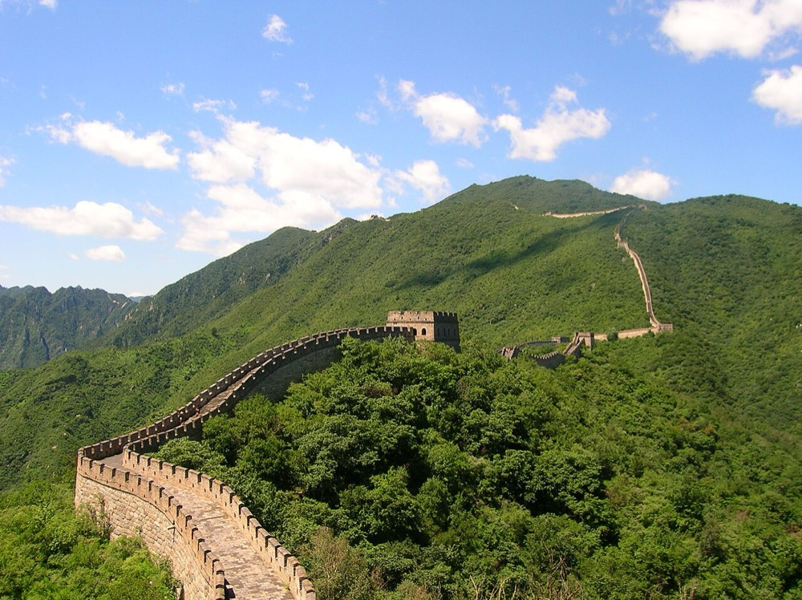

Китай

Китай — страна, которая масштабирует всё, включая ваше воображение о «далеко». Великая стена: участок Мутянью — зелёные хребты, канатка наверх и стена, уходящая в дым, сколько видит глаз; приходите утром — толпы подтянут к полудню. Пекин — Запретный город по центральной оси, где красные стены отрастают в бесконечность, хутун — старые переулки, где жизнь идёт на лавочках, и утка по-пекински в тонких лепёшках, по которой вы будете мерить все остальные утки. Шанхай — парад небоскрёбов Пудуна с набережной Бунд напротив: колониальные фасады смотрят на будущее через реку, и вечером оба города включаются как сцена. Лапша ламянь руками — вытягивается на ваших глазах в два метра и в бульон; димсамы по утрам, тележки со стеллажами проезжают между столами. Ханчжоу с Западным озером: лотосы, мосты и поэтические названия, которые здесь дают даже камешкам. Мобильный платёж здесь работает быстрее, чем ваша кредитка, — подготовьте приложение заранее. Китай не показывает всё сразу — он показывает по регионам, как сериал.
Что знать перед поездкой
- Мутянью — по будням, к 9 утра
- Приложение платежей — до поездки
- Утка по-пекински — с лепёшками и огурцом